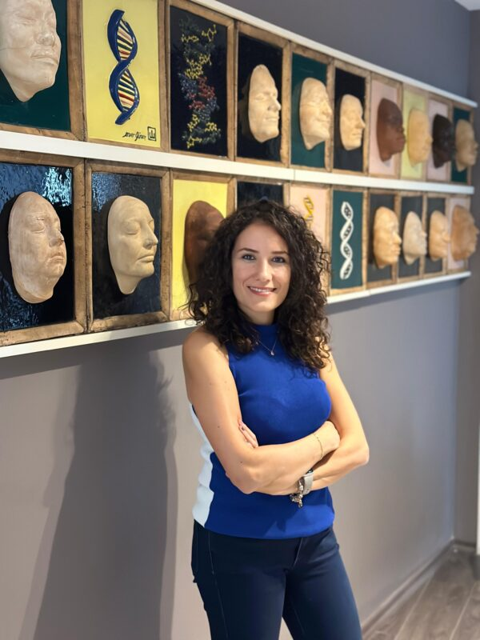
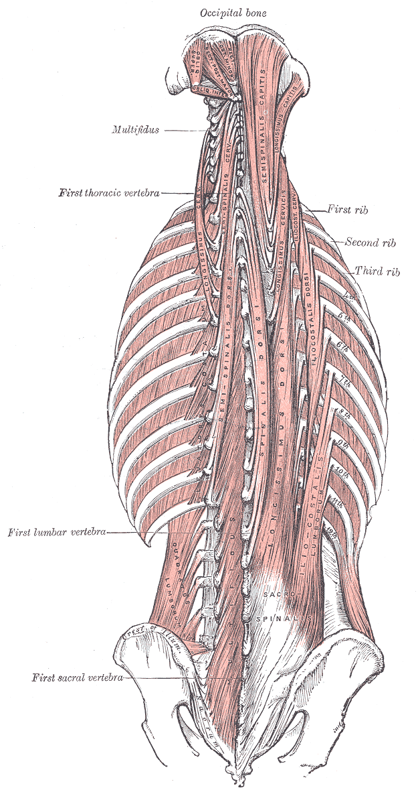
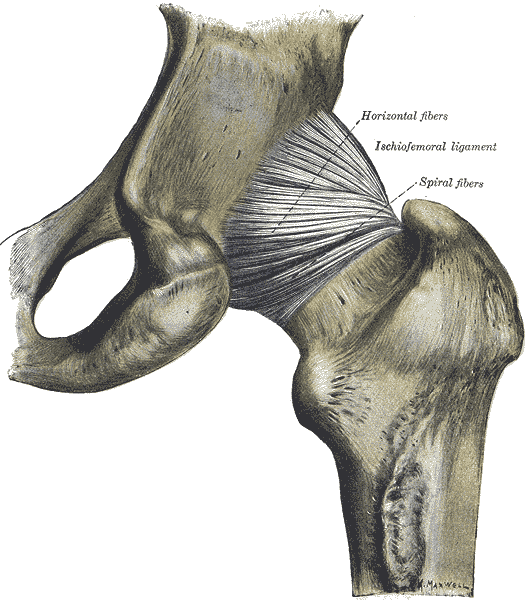
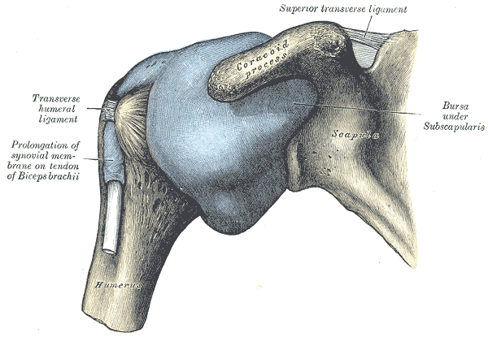
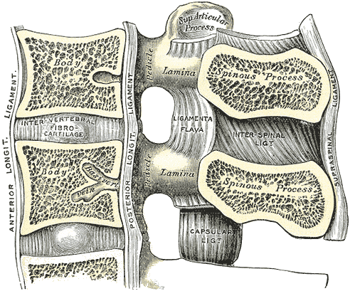
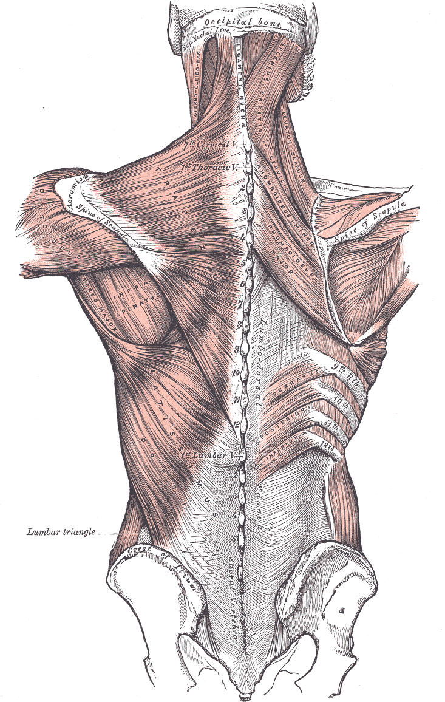
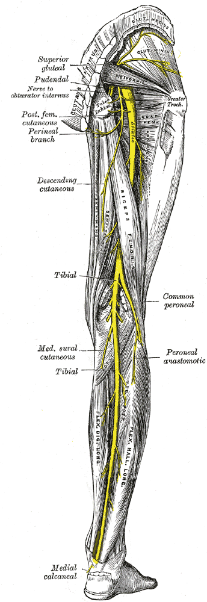

Çankaya’da manuel terapi
Uzman fizyoterapist İrem Küçüktepe. Bel-boyun ağrıları, spor yaralanmaları, baş ağrıları ve postür bozukluklarında her hastaya ayrı bir tedavi planı.

Neyi tedavi ediyorum
6 alan-

Bel ve boyun ağrıları
Manuel terapi teknikleriyle bel-boyun kaynaklı ağrılarda rahatlama ve uzun süreli iyileşme hedeflenir.
Bunun için randevu -

Kalça, diz, ayak bileği
Spor yaralanmaları, menisküs ve bağ problemlerinde güvenli rehabilitasyon programları.
Bunun için randevu -

Omuz ve el problemleri
Omuz sıkışması, tenisçi dirseği, karpal tünel gibi sorunlara manuel terapi ve egzersiz.
Bunun için randevu -

Disk yaralanmaları
Disk problemleri ve fıtık sonrası fonksiyonel dönüş için kontrollü egzersiz ve manuel uygulamalar.
Bunun için randevu -

Postür ve duruş bozukluğu
Postür analizi, ergonomi danışmanlığı ve düzeltici egzersizlerle sağlıklı duruş.
Bunun için randevu -

Her hasta biriciktir
- 2010Ankara’da kurumsal bir hastanede başladım
- 8 yılNörolojik rehabilitasyon
- HacettepeRomatolojik Rehabilitasyon yüksek lisansı
- 2020’den beriManuel terapi ve kronik ağrı
Nörolojiden manuel terapiye
Meslek hayatıma 2010 yılında Ankara’da kurumsal bir hastanede başladım. İlk çalışma alanım olan nörolojik rehabilitasyon üzerinde 8 sene çalıştıktan sonra rotamı manuel terapi ve kronik ağrılar üzerine çevirdim.
Hacettepe ve eğitimler
Hacettepe Üniversitesi Romatolojik Rehabilitasyon alanında yüksek lisansımı tamamladım. Lenfatik Drenaj, MCMT (Master Certification of Manual Therapy), Maitland ve Kinezyolojik Bantlama eğitimlerine katıldım. 2020’den bu yana “Her hasta biriciktir” ilkesiyle çalışıyorum.
Sık sorulanlar
Kaç seans tedavi almalıyım?
Kişinin yaşına, şikayetlerin şiddetine ve süresine göre değişir; genellikle ilk 4-5 seansta belirgin azalma görülür.
Tedavinin etkisi kalıcı mı?
Amaç uzun süreli iyileşmedir. Semptomları bastırmak yerine sorunun kaynağına odaklanılır; sonuç kişinin durumuna ve tedaviye uyumuna göre değişir.
Tedaviye ara vermek süreci olumsuz etkiler mi?
Tercih edilen aksatmamak olsa da yapılan uygulamalar vücutta kayıtlı kalır; ara sonrası kaldığınız yerden devam edilebilir.
Hangi yöntemlerle çalışıyorsunuz?
Manuel terapi temelli çalışıyorum. MCMT, Maitland, Lenfatik Drenaj ve Kinezyolojik Bantlama eğitimlerinden aldığım teknikleri her hastanın değerlendirmesine göre bir araya getiriyorum.
Nasıl randevu alabilirim?
WhatsApp’tan yazabilir ya da +90 533 212 93 50 numarasını arayabilirsiniz. Bu sayfadaki formu doldurduğunuzda mesajınız WhatsApp’ta hazır açılır.
Klinik nerede?
1071 Usta Plaza C Blok Daire 17, 1443. Cd. No: 25, Kızılırmak Mah. (Çukurambar), 06510 Çankaya/Ankara. Konum sayfanın sonundaki haritada.
Çukurambar, Ankara
1071 Usta Plaza, C Blok, Daire 17
1443. Cd. No: 25, Kızılırmak Mah., 06510 Çankaya/Ankara
Randevuyla çalışıyorum. Yol tarifi ve danışan yorumları Google profilimde.
Çalışma saatleri
- Pazartesi – Cuma
- 09:00 – 18:00
- Cumartesi
- 09:00 – 17:00
- Pazar
- Kapalı